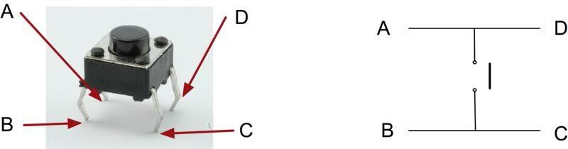
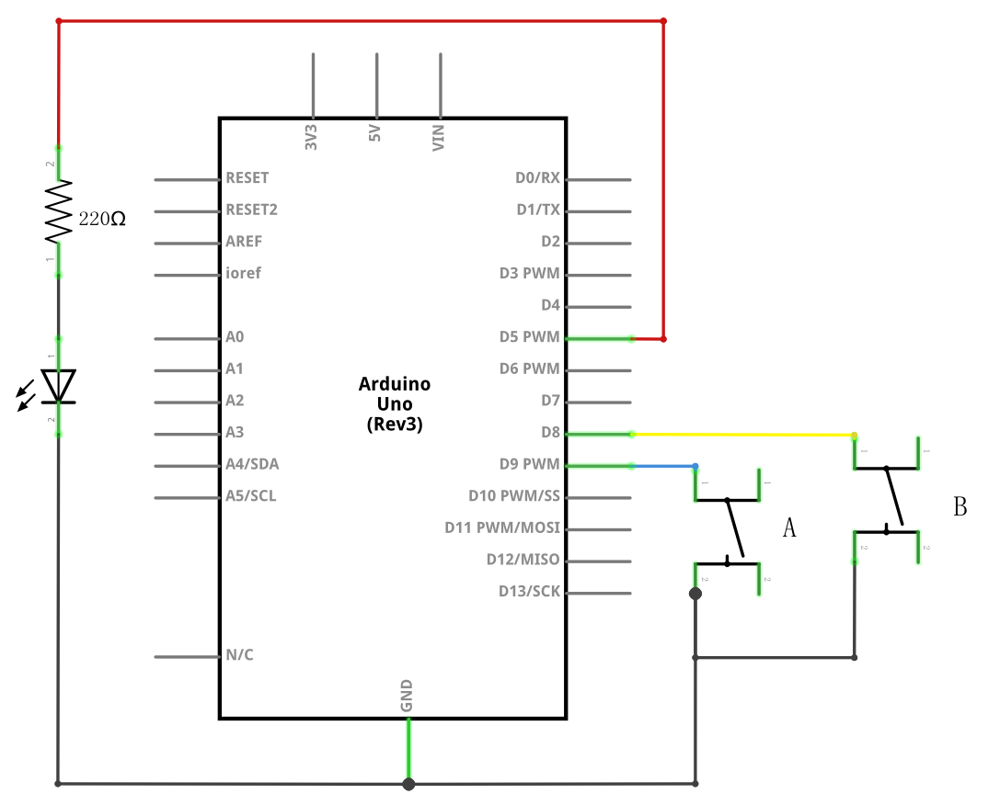
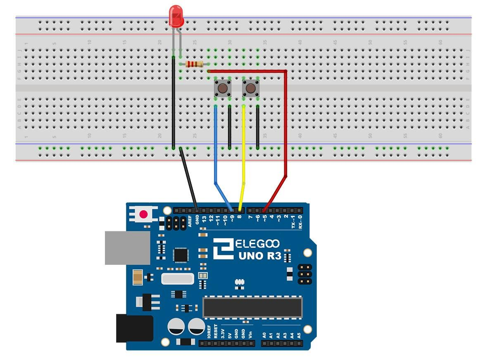

En esta lección, aprenderemos a utilizar los botones con entradas digitales para encender y apagar un LED.
(1) x Elegoo Uno R3
(1) x Protoboard
(1) x LED rojo de 5mm
(1) x Resistencia de 220 ohmios
(2) x Interruptores de presión
(7) x M M cables (cables de puente de macho a macho)
Los interruptores son componentes muy simples. Pueden ser del tipo botón, que se activarán
cuando pulses el botón o pueden ser de palanca, que consisten en mover la posición de un lado
a otro.
Estos componentes conectan dos contactos para que la electricidad fluya a través de ellos.



Aunque los cuerpos de los interruptores son cuadrados, los pasadores sobresalen de
los lados opuestos del interruptor. Esto significa que los pines sólo estarán lo
suficientemente separados cuando se colocan correctamente en la placa de pruebas.
Recuerda que el LED tiene que tener el cable negativo más corto a la izquierda.
Después de colocar los cables, abriremos el programa que esta ubicado en la carpeta habitual que contiene los ejemplos de script.
Una vez el script este cargado en la placa de arduino, presionaremos el botón izquierdo y veremos
que el LED se encender y si pulsamos el botón derecho apagará.
En la primera parte del script se definen tres variables para los tres pins que se van a
utilizar. El ledPin es el pin de salida y buttonApin se refiere al interruptor más cerca
de la parte superior de la placa y el buttonBpin para el otro interruptor.
La función de void setup( ) define el ledPin como una salida normal y los buttons
como entradas, utilizando la palabra reservada INPUT_PULLUP.
pinMode(buttonApin, INPUT_PULLUP);
pinMode(buttonBpin, INPUT_PULLUP);
El modo pin de INPUT_PULLUP significa que el pin debe ser utilizado como una
entrada, pero ademas el termino PULLUP significa que al conectarse el componente, su valor por
defecto será HIGH (alta).
Por esta razón los interruptores están conectados a tierra, cuando un interruptor se
presiona, se conecta la clavija de entrada a la tierra.
Puesto que la entrada es normalmente alta y va sólo baja cuando se pulsa el botón,
la lógica esta invertida. Nos encargaremos de esto en la función loop
void loop() {
if (digitalRead(buttonApin) == LOW) {
digitalWrite(ledPin, HIGH);
}
if (digitalRead(buttonBpin) == LOW) {
digitalWrite(ledPin, LOW);
}
}
En la función loop hay dos declaraciones if, una para cada botón. Cada una
hace un digitalRead en la entrada adecuada.
Recuerda que si se presiona el botón, la entrada correspondiente será baja, si el
botón A es bajo, entonces un digitalWrite en el ledPin enciende, del mismo modo,
si se presiona el botón B, un bajo se escribe en el ledPin.
Si tenemos todo el cableado bien, deberíamos tener algo como en la imagen, de no ser asi debemos revisar los apartados anteriores.